Introduction to FlashROM
半年多没写文章了，固件提取系列已经写到第11部，这一个我觉得没那么难，可以公开。
FlashROM是一款开源的Flash固件提取项目，支持多种硬件平台，SPI Flash和Parallel Flash。 这一次遇到了一款NAND的SPI Flash，型号为IS38SML01G1，车规级存储芯片。起初以为SPI Flash都是NOR芯片，于是没有看手册，飞线用编程器读取，通常的编程器无法读取，又使用RT809H读取，也失败。于是查看手册才发现是NAND Flash，目前只有REVELPROG-IS支持读写。 一开始想使用FT2232HL来读取，发现官方对该芯片的文档支持不是很好，于是使用树莓派3B。
flashchips.c文件保存了各个芯片的配置信息，设计的非常好，扩展性很强。
{
.vendor = Vendor name
.name = Chip name
.bustype = Supported flash bus types (Parallel, LPC...)
.manufacture_id = Manufacturer chip ID
.model_id = Model chip ID
.total_size = Total size in (binary) kbytes
.page_size = Page or eraseblock(?) size in bytes
.tested = Test status
.probe = Probe function
.probe_timing = Probe function delay
.block_erasers[] = Array of erase layouts and erase functions
{
.eraseblocks[] = Array of { blocksize, blockcount }
.block_erase = Block erase function
}
.printlock = Chip lock status function
.unlock = Chip unlock function
.write = Chip write function
.read = Chip read function
.voltage = Voltage range in millivolt
}
根据文档，加入了38SM的配置信息。 根据文档信息，一个NAND SPI Flash有1024个Block，每个Block有64Page，一个Page有2K+64字节，其中64是冗余区。 这里的Total Size是以KB为单位，因此不需要加上冗余区的大小。电平范围根据文档设置成2.7V~3.6V。
{
.vendor = "ISSI",
.name = "IS38SML01G1",
.bustype = BUS_SPI,
.manufacture_id = ISSI_NAND_ID,
.model_id = ISSI_NAND_ID_SPI,
.total_size = 131072, /* kb */
.page_size = 2048, /* bytes, actual page size is 64 */
.tested = {.probe = OK, .read = OK, .erase = NA, .write = NA},
.probe = probe_spi_rdid5,
.probe_timing = TIMING_ZERO,
.block_erasers =
{
{
.eraseblocks = { {64 * 2048, 1024} },
.block_erase = spi_block_erase_d8,
}
},
.write = NULL,
.read = spi_read_issi,
.voltage = {2700, 3600},
},
要读取Flash的内容，需要实现芯片的初始化和读取功能。因此我们只要对probe和read添加指针。下图是各个Command的定义，包括Op Code字节，寻址用的字节，填充字节和下位机返回的数据字节。数据的传输格式是MSB。
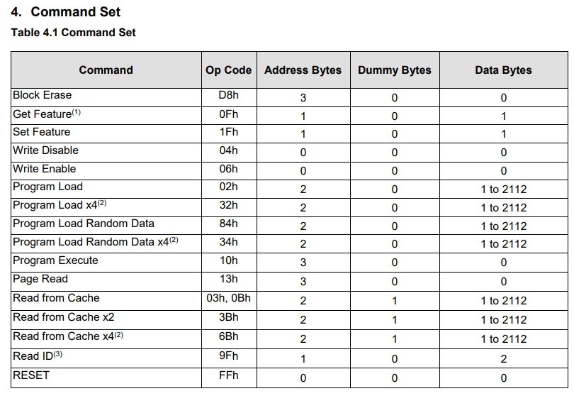
初始化需要读取ID，首先把芯片ID定义写好。Mark Code 和 Device Code有用。剩下的Communication Code 0x7F7F7F也顺便写上去吧。
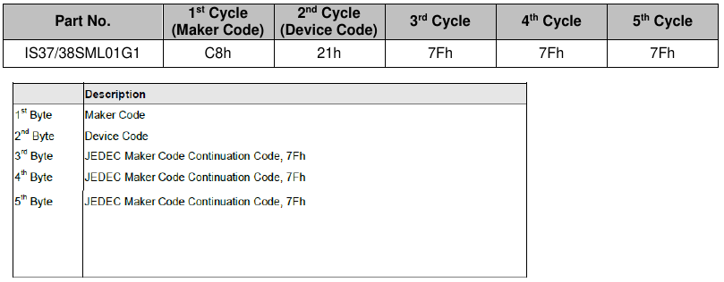
#define ISSI_NAND_ID 0xC8
#define ISSI_NAND_ID_SPI 0x21
#define ISSI_38SML01G1 0x7F7F7F
FlashROM内置的probe_spi_rdid4函数用于读取JEDEC ID，即发送0x9F，但是由于该芯片发送Read ID指令需要填充一个字节，正常情况使用probe_spi_rdid读取第一个字节会变成0x00。ISSI文档的时序图简直AV画质。
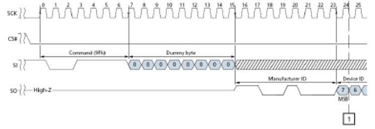
因此需要新建一个函数，把它命名为probe_spi_rdid5。另外再加上读取的函数spi_read_issi，它们都要在chipdrivers.h里声明
int probe_spi_rdid5(struct flashctx *flash);
int spi_read_issi(struct flashctx *flash, uint8_t *buf, unsigned int start, unsigned int len);
Read ID函数，如果第一位是0x00，那么跳过这一位继续读取。也可以发送ID的时候填充一位，就不用判断MISO的数据了。
int probe_spi_rdid5(struct flashctx *flash)
{
const struct flashchip *chip = flash->chip;
unsigned char readarr[6];
uint32_t id1;
uint32_t id2;
uint32_t bytes = 6;
if (spi_rdid(flash, readarr, bytes)) {
return 0;
}
if (!oddparity(readarr[0]))
msg_cdbg("RDID byte 0 parity violation. ");
/* Check if this is a continuation vendor ID.
* FIXME: Handle continuation device IDs.
*/
if (readarr[0] == 0x00) {
if (!oddparity(readarr[1]))
msg_cdbg("RDID byte 1 parity violation. ");
id1 = (readarr[0] << 8) | readarr[1];
id2 = readarr[2];
} else {
id1 = readarr[0];
id2 = (readarr[1] << 8) | readarr[2];
}
msg_cdbg("%s: id1 0x%02x, id2 0x%02x\n", __func__, id1, id2);
if (id1 == chip->manufacture_id && id2 == chip->model_id)
return 1;
/* Test if this is a pure vendor match. */
if (id1 == chip->manufacture_id && GENERIC_DEVICE_ID == chip->model_id)
return 1;
/* Test if there is any vendor ID. */
if (GENERIC_MANUF_ID == chip->manufacture_id && id1 != 0xff && id1 != 0x00)
return 1;
return 0;
}
另外是读取函数，首先要知道芯片数据的读取过程。NAND主控先把NAND的数据放入Cache Memory，一次只能读一页，然后NAND主控再把数据从Cache读取出来输出到上位机。
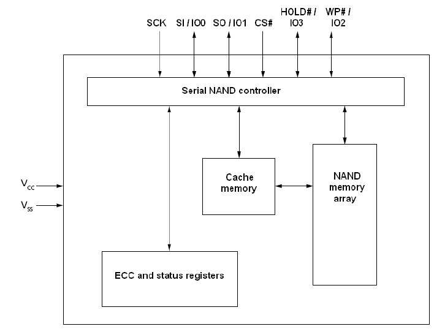
因此要先发送读取指令，告诉控制器要读取哪一页。在NAND数据传输到Cache的时候，不能做其他读写操作。此时状态寄存器应该处于繁忙状态。OIP==1。
在发送完页读取指令后，应该循环发送0x0F 0xC0直到OIP==0。
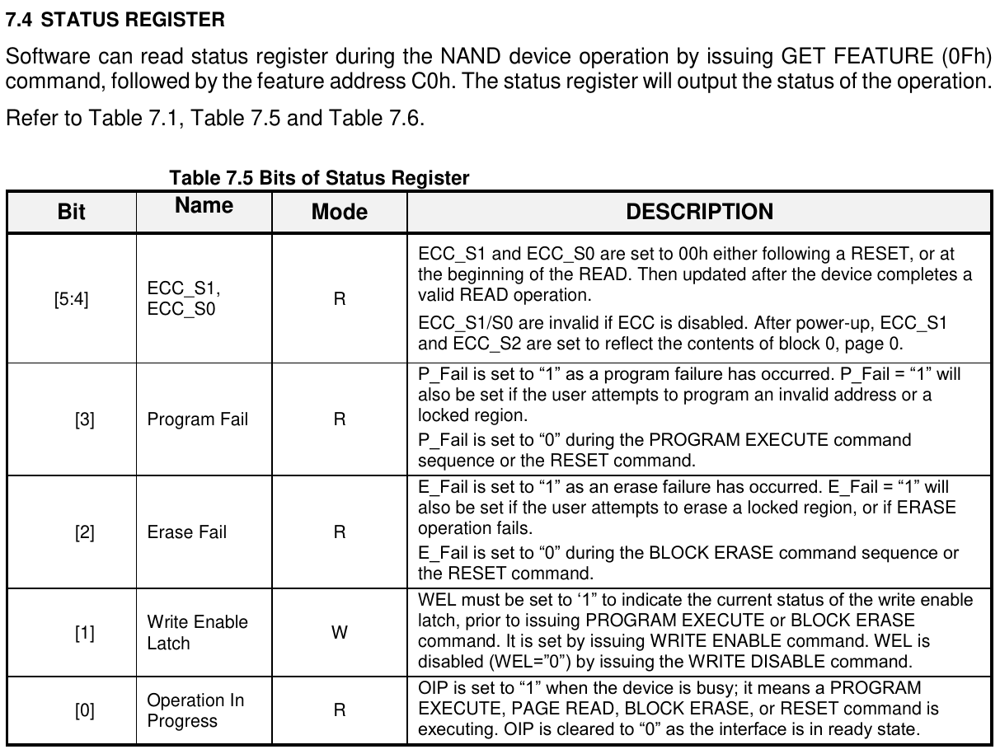
因此一次完整的读取流程的CMD如下：
0x13 页读取 0x0F 0xC0 轮询状态 0x03 缓存读取
页读取根据Command定义，寻址字节长度为3，其中有一字节为无效数据，所以最大地址为0xFFFF，换算成10进制长度为65536。1024 Blocks * 64 Pages = 65536 Pages。这里的填充数据暂时先理解为[7:0]，寻址数据为[23:8]
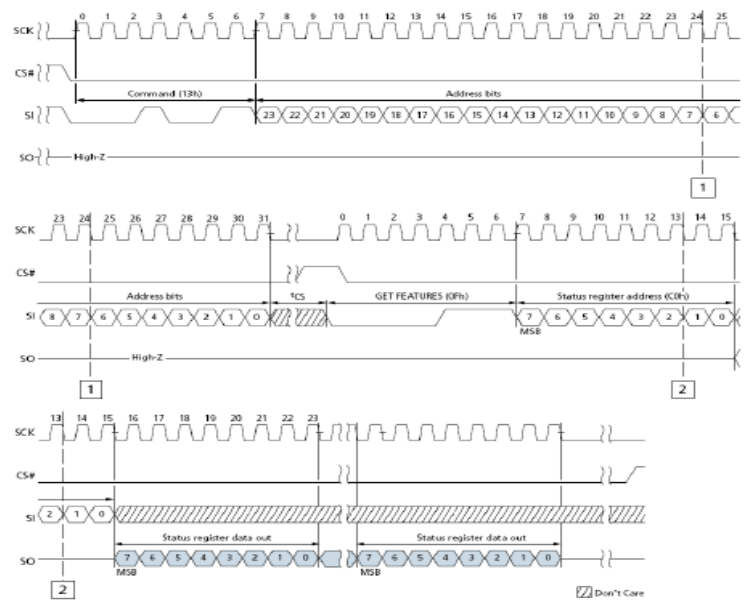
缓存读取的寻址长度为2-bytes，填充字节为1-bytes + 4-bits，因此缓存的寻址长度为12-bits既4096，文档中规定的范围是0-2112，可以理解为2048-bytes + 64-bytes (OOB area)。
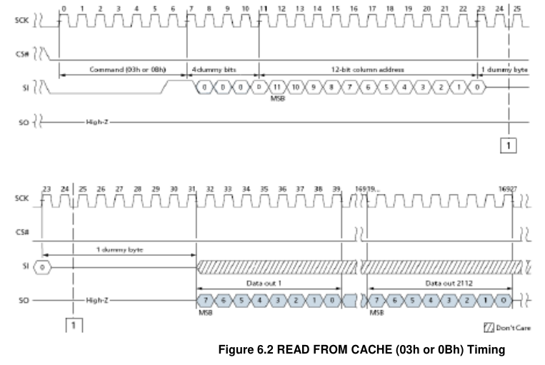
下面是spi_read_issi的实现。
int spi_read_issi(struct flashctx *flash, uint8_t *buf, unsigned int start, unsigned int len)
{
uint8_t cmd[4];
uint8_t page_read_resp[1];
unsigned int ret = 0;
unsigned int buf_off = 0;
uint8_t cache_read_cmd[4];
uint8_t get_feature_cmd[2] = {0x0f, 0xc0};
for (unsigned int address_h = 0; address_h < 256; address_h++)
{
for (unsigned int address_l = 0; address_l < 256; address_l++)
{
cmd[0] = 0x13; /* page read cmd */
cmd[1] = 0x00; /* dummy byte */
cmd[3] = (uint8_t)address_h;
cmd[2] = (uint8_t)address_l;
ret = spi_send_command(flash, sizeof(cmd), 1, cmd, page_read_resp);
/* 7-0 bits: ECC_S1, ECC_S0, P_Fail, E_Fail, WEL3, OIP */
uint8_t status[1] = {0};
int get_feature_ret = 1;
{
internal_sleep(10);
get_feature_ret = spi_send_command(flash, sizeof(get_feature_cmd), sizeof(status), get_feature_cmd, status);
}while (get_feature_ret);
/* printf("\nStatus: 0x%X, get_feature_ret:%d\n", (unsigned int)status[0], get_feature_ret); */
cache_read_cmd[0] = 0x03; /* page read cmd */
cache_read_cmd[1] = 0x00;
cache_read_cmd[2] = 0x00;
cache_read_cmd[3] = 0x00; /* dummy byte */
if (status[0] == 0)
{
int cache_read_ret = spi_send_command(flash, sizeof(cache_read_cmd), 2048, cache_read_cmd, buf + 2048 * buf_off);
ret = cache_read_ret;
} else {
printf("device busy. timeout\n");
ret = spi_send_command(flash, sizeof(get_feature_cmd), sizeof(status), get_feature_cmd, status);
}
/* Send Read */
unsigned int *buf_addr = (unsigned int *)((unsigned int)buf + 2048 * buf_off);
if (buf_addr[0] != 0xffffffff){
printf("buf_off:%d, address: 0x%x%x\nbuf_addr: 0x%X\ndata:\n", buf_off, (int) cmd[2], (int)cmd[1], (unsigned int)buf_addr);
/*int* = 4* int8 */
for (int b = 0; b < 512; b++)
{
printf("%08x", buf_addr[b]);
}
printf("\n");
}
// printf("\n");
if (ret){
printf("reading err");
break;
}
buf_off++;
}
}
return ret;
}
飞线
首先使用夹具，热风枪400℃底部加热12秒
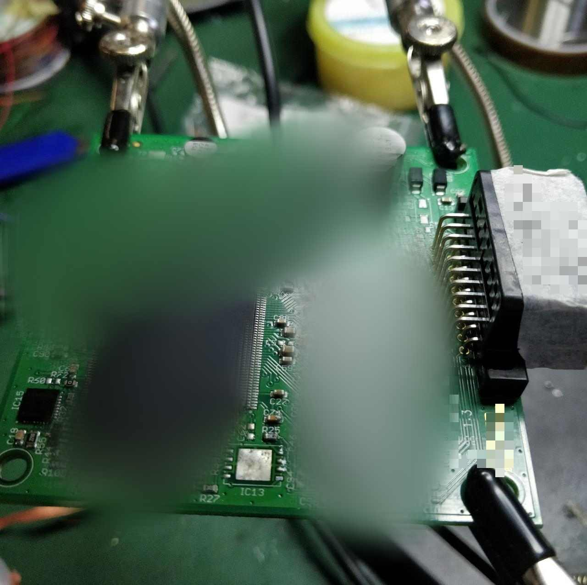
将芯片焊在转接板上面
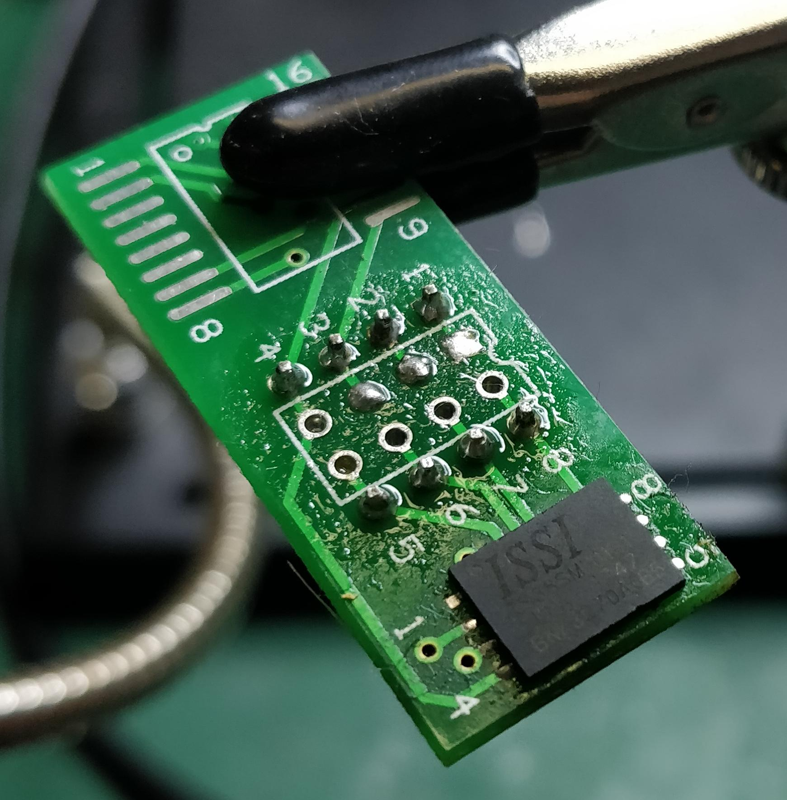
一开始没有考虑到WSON封装的底部会导致短路，于是重新飞线
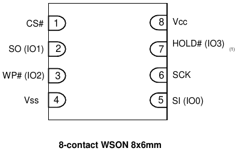

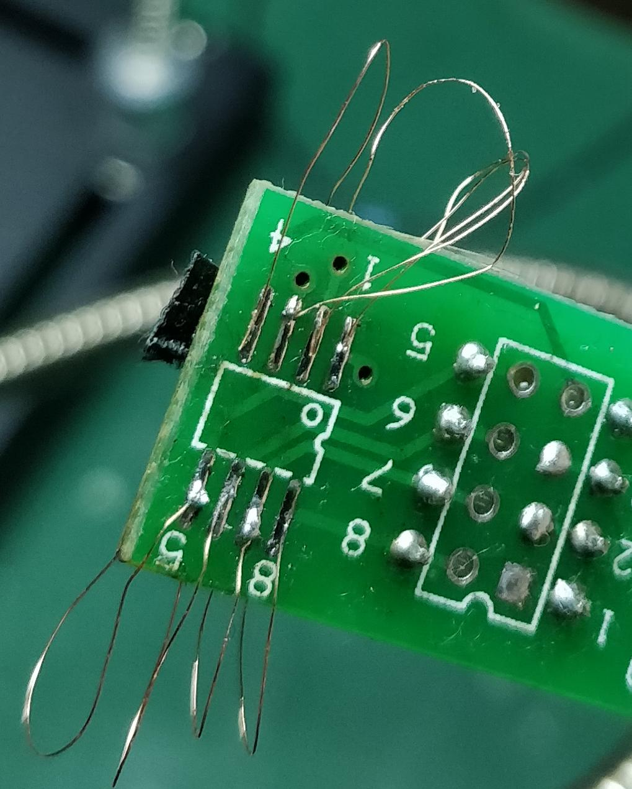
接至树莓派3B 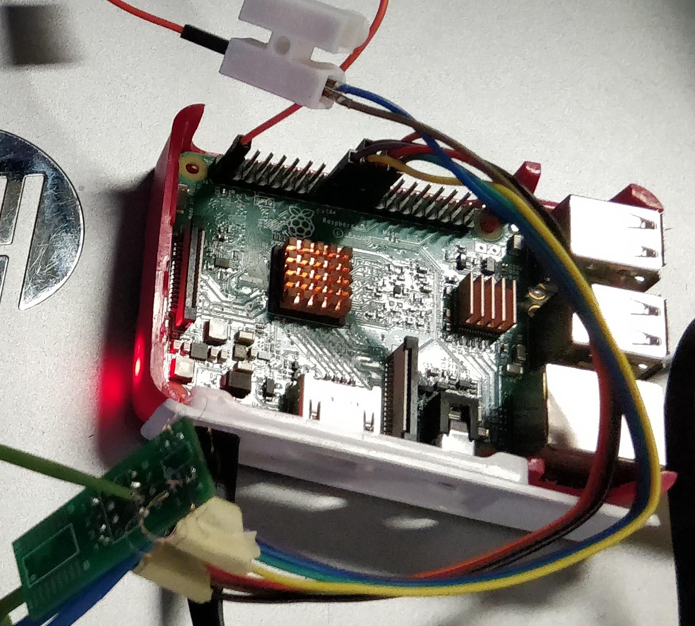
接线方式如下，HOLD要接在VCC上。
| RPi header | SPI flash |
|---|---|
| 25 | GND |
| 24 | /CS |
| 23 | SCK |
| 21 | DO |
| 19 | DI |
| 17 | VCC 3.3V (+ /HOLD, /WP) |
开启SPI模拟
vi /boot/config.txt
dtparam=spi=on
加载内核模块
# If that fails you may wanna try the older spi_bcm2708 module instead
sudo modprobe spi_bcm2835
sudo modprobe spidev
flashrom -p linux_spi:dev=/dev/spidev0.0,spispeed=10000 -c IS38SML01G1 -V -r /tmp/is38_nooob.bin
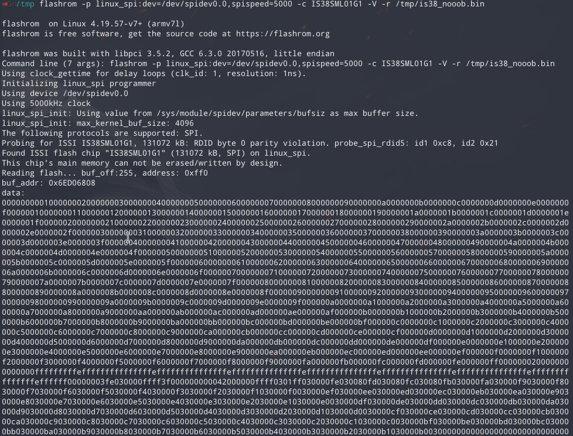
目标设备初始化分析
读取出来的128MB固件几乎全是0xFF，但是问了厂商，这个芯片存储了一些软件和配置信息。由于ISSI Flash文档没有写清楚页读取寻址的格式，寻址有3字节，高位字节和低位字节连续，所以有两种排列，再与填充字节组合，有4种地址格式，不知道哪一种是正确的。于是我把4种地址格式都读了一遍，只是数据的分布变化了，没有办法确定正确的分布。
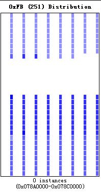
 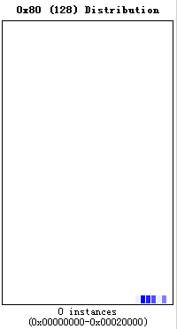
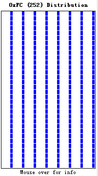
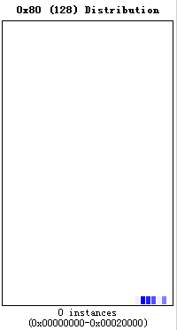
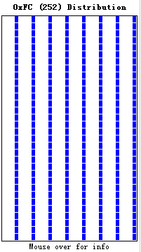
完全按照文档编写的驱动，读取出来几乎全是0xFF，感觉是哪里出问题了，于是上逻辑分析仪。 只需要抓取三个通道的数据，MOSI,MISO,CLK。使用MSB，CPOL和CPHA都设为0。
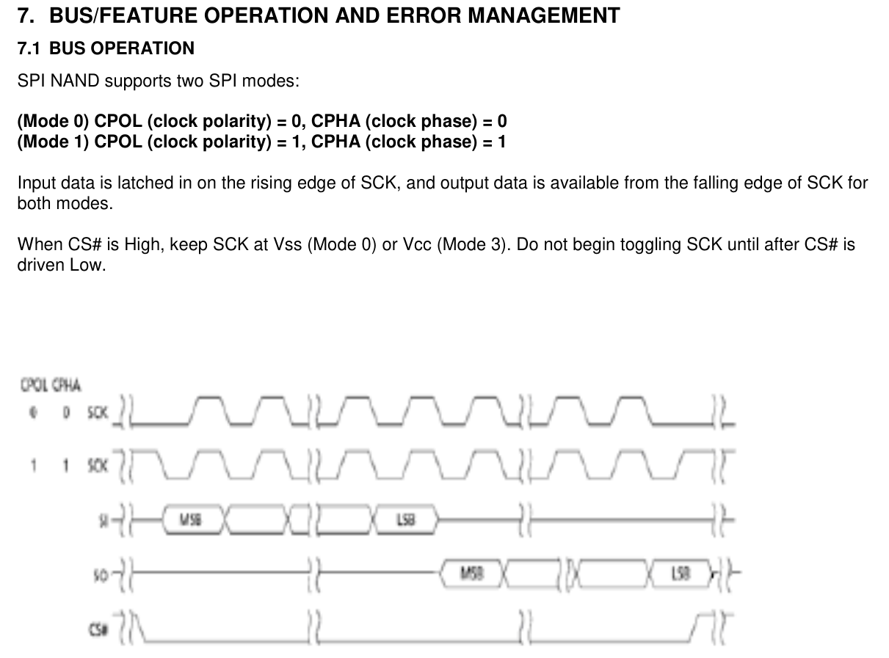 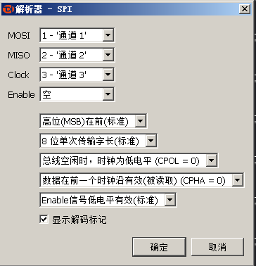
设置成时钟上升沿触发，采样频率200MHz。 首先抓取树莓派读取Flash的的数据，符合文档规范，
读取JEDEC ID
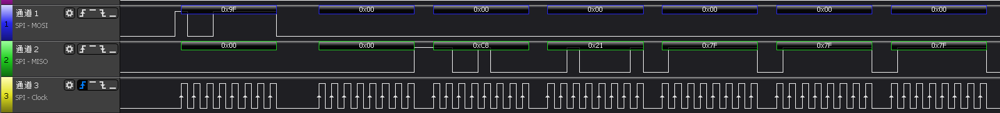
读取状态
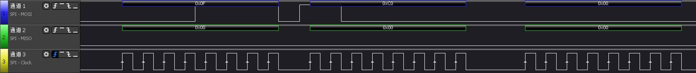
当读取cache时，发完4个字节的数据，MISO就一直处于高电平，让人觉得是哪里不对。
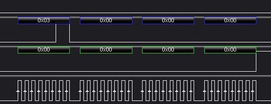
再对目标设备抓取数据
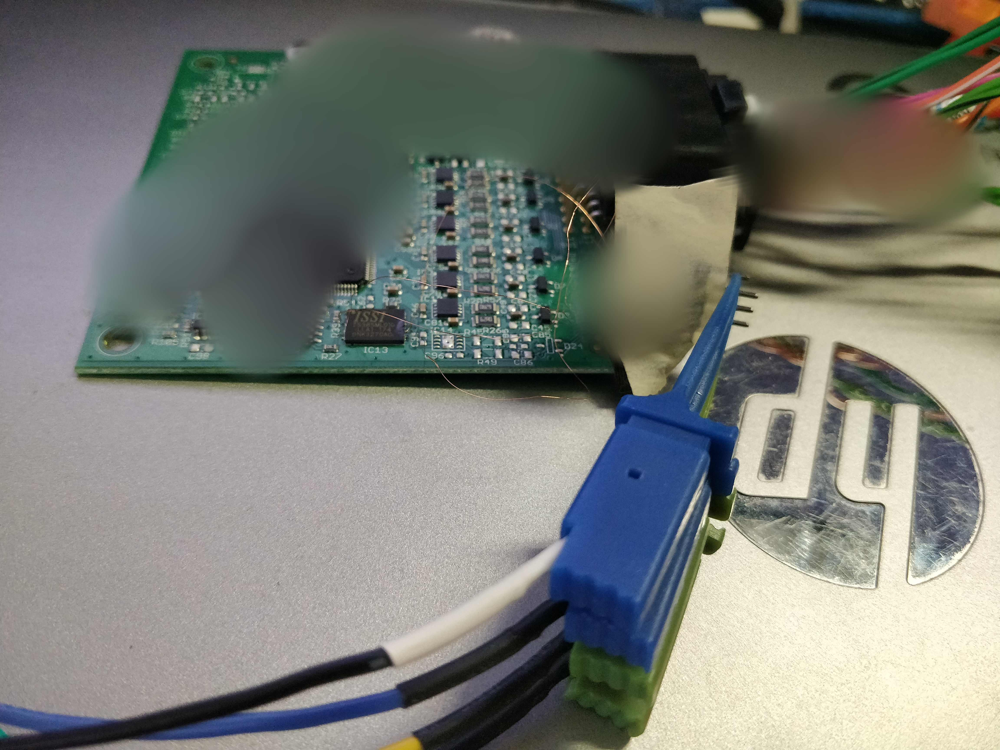
首先读取JEDEC ID，没问题，和树莓派的区别是只返回前两个ID。
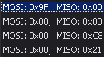
页读取到缓存读取，首先发送读取页的指令，然后发送读取状态，等待控制器返回0，再发送缓存读取指令。这里就出问题了，后面的MISO也是输出0xFF，但是每四个字节输出，Master就会输入4个不知道什么含义的字节，循环交替。0x03可以确定是单路传输，并且在树莓派上，MOSI也不会产生数据，可以证明不是Slave发来的。
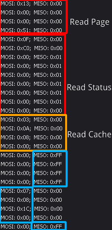
至少证明我的代码没错，设备目前没有使用到存储芯片，
读取OOB导致的后果
一开始想把冗余区读取出来，所以响应buffer设成2112，最后在dump文件里看到了ELF的文件头，一开始以为目标设备使用了ELF文件。但是总觉得不对劲，车载网关怎么会使用Linux。
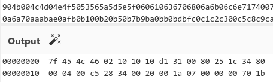
后来查看内存的地址分布，感觉是超出了堆的大小，越界读到了后面的库文件
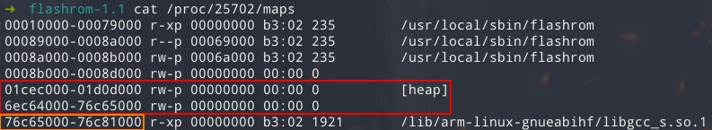
计算一下，第一段是实际堆的大小，第二段是实际读取的大小，第三段是正常读取的大小，所以不要去读冗余区。
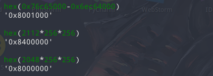
REVELPROG-IS开箱
时隔一个多月，购买了REVELPROG-IS，用于验证FlashROM读取的结果是否正确。
这是波兰制造，包装和编程器外观都还行

电路设计很简单，一颗STM32F103的芯片，价格有点小贵，还好没被抄板子

验证读取结果
WSON8的烧录座还没到货，暂时飞线读取。
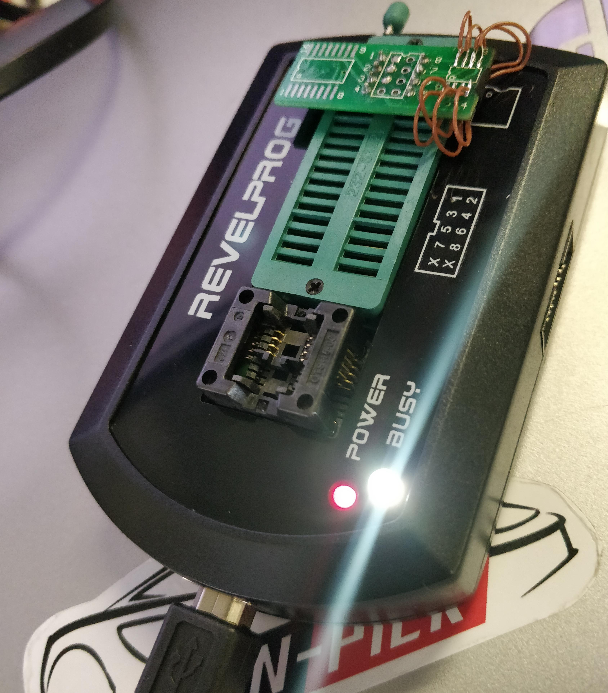
读取速度超慢，花了几分钟时间。不支持调整速率，还是FlashROM速度最快
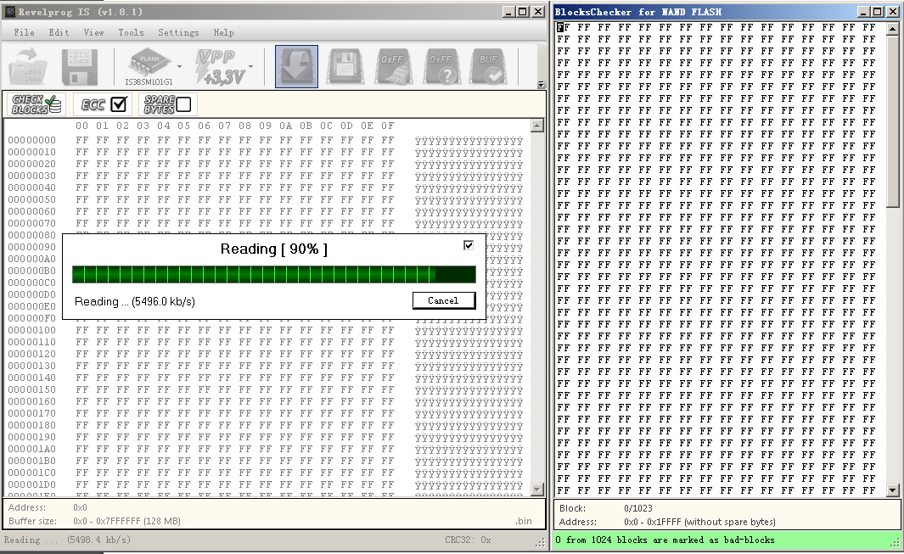
读取的数据和前面一致
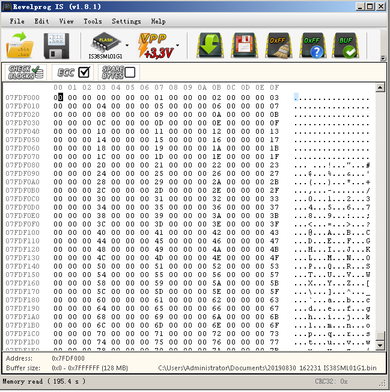
寻址格式和第三种对应，具体顺序忘了，以后就用这个编程器读了。

勘误
在后续的研究中，发现这个文章存在一些坑。 Address_h 和 address_l 是在不知道读取规则的前提下假设的，因为文档没有写。两者长度都假设是8-bit。 在阅读了其他几款芯片的文档后，确定存在问题。 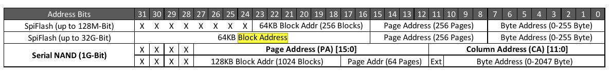 实际上这两个参数代表块地址与页地址，块数量1024，占据10位，页地址64，占据6位，加起来刚好16-bits。不同大小的芯片有不同的规则。 因此读取的结果会出现重复，加上有效数据刚好分布在存储设备的前面部分，剩余的都是无效数据，即使地址错误，读取出来的结果也不影响，最终呈现和编程器读取一致的结果。
另外给出的代码里，Status判断存在问题，不一定要为0才能读取数据。BBM LUT FULL(Look-Up Table)也可能为1，ECC Err Status可能是0x20。 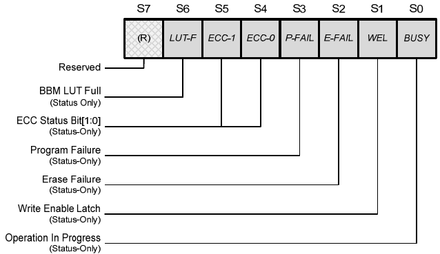